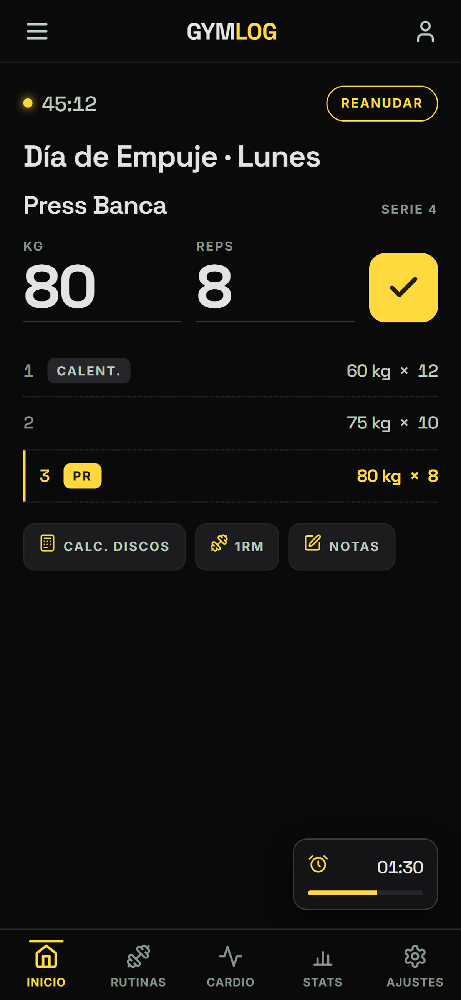
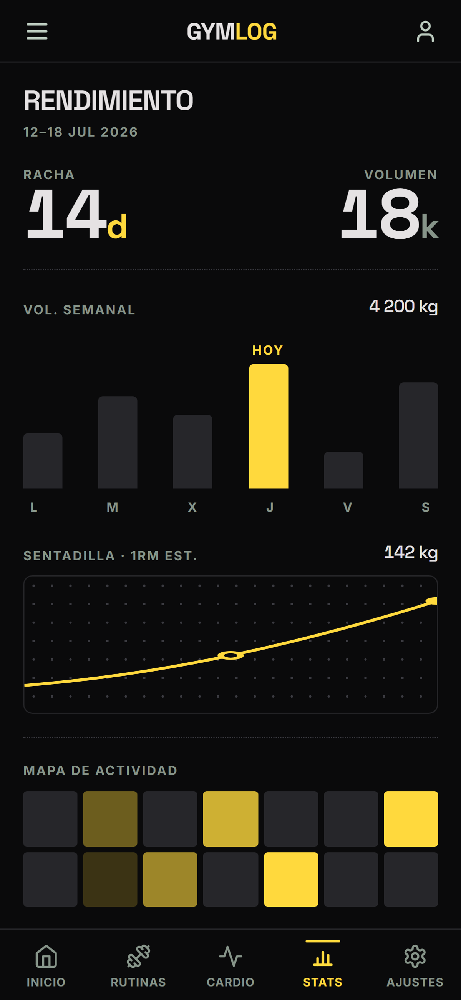
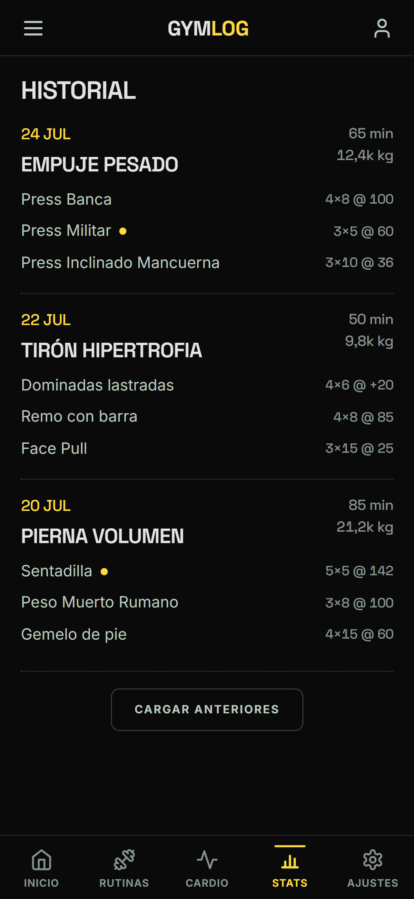
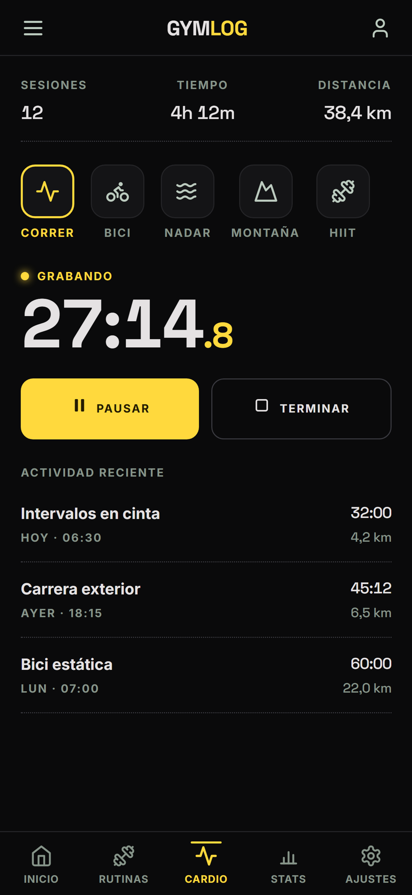

Registro de fuerza
Series, repeticiones y peso en dos toques. Marca calentamientos y añade notas por ejercicio.
2 toquesGymLog apunta tus pesos, repeticiones y récords para que tú solo pienses en la siguiente serie. Fuerza, cardio, rachas y estadísticas — gratis, sin anuncios y con modo offline.
La app de iOS está en desarrollo; disponible próximamente.
Ejemplos de récords registrados en GymLog: press banca 100 kilos por 5, sentadilla 140 por 3, peso muerto 180 por 1, racha de 14 días.
Todo en una app
Registro sin fricción y la analítica que de verdad mueve la aguja. Sin papel, sin hojas de cálculo.
Series, repeticiones y peso en dos toques. Marca calentamientos y añade notas por ejercicio.
2 toquesCorrer, bici, remo o cuerda: cronómetro con pausas y tus sesiones guardadas al segundo.
Detecta tus PRs de peso y 1RM estimado al instante. Con confetti cuando los superas.
Mantén la racha viva. Heatmap de frecuencia y recordatorios si llevas días sin entrenar.
Volumen, progresión por ejercicio, distribución muscular y fatiga. Datos claros, decisiones mejores.
Funciona sin conexión como PWA o app nativa para Android e iOS. Tus datos, siempre disponibles.
Cómo funciona
Del primer set al primer récord en menos de un minuto.
Búscalo en tu biblioteca o crea uno nuevo. Filtra por grupo muscular o por nombre.
Peso y reps, listo. Añade notas o marca calentamientos si quieres.
Estadísticas, PRs y rachas se actualizan solos. Sin complicaciones.
La app por dentro
Tema oscuro, números grandes y cero distracciones: entrena, registra y revisa tu progreso.




Preguntas frecuentes
Sí, 100 % gratis. Sin anuncios, sin suscripciones y sin compras dentro de la app.
Puedes empezar a registrar entrenos sin registrarte. Si quieres sincronizar tu historial entre dispositivos, inicia sesión con Google — es opcional.
Por ahora se distribuye como APK directo desde esta web. La app de iOS está en desarrollo. Descargar el APK es rápido y seguro; te explicamos cómo justo abajo.
Descarga el archivo, ábrelo y, si Android lo pide, permite la instalación desde «orígenes desconocidos» para tu navegador. Tienes la guía paso a paso en el tutorial.
Sí. Puedes registrar entrenamientos completamente offline; se sincronizan solos en cuanto recuperas conexión.
El APK está firmado y se sirve solo desde gymlog.dpdns.org. Además, el código es abierto: puedes revisarlo en GitHub.
Descarga el APK para Android o pruébala al instante en el navegador. La app de iOS está en desarrollo. Sin registro obligatorio.
La app de iOS está en desarrollo; disponible próximamente.